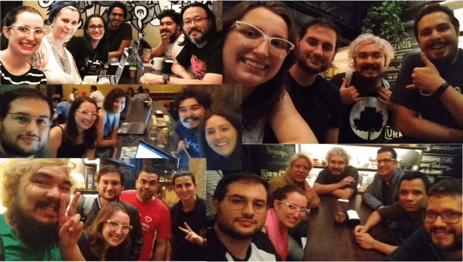

Transformando a sua personalidade em comunicação!
Esse é um evento para fazer você dar o primeiro passo! Te ajudar a escrever a sua palestra e submeter para algum evento! Venha escrever sua proposta de palestra e submeta para diversos call4papers!E ainda tem a oportunidade de conhecer gente nova e tomar um café ;D Não temos cronograma nem pauta, só chegar e conversar!
Quer receber nossas novidades em primeira mão? Sem falar nas dicas super legais sobre comunicação! Se inscreva em http://bit.ly/help4papers-news

 Facebook
Facebook
 Twitter
Twitter
 Instagram
Instagram
 Youtube
Youtube
 Telegram
Telegram